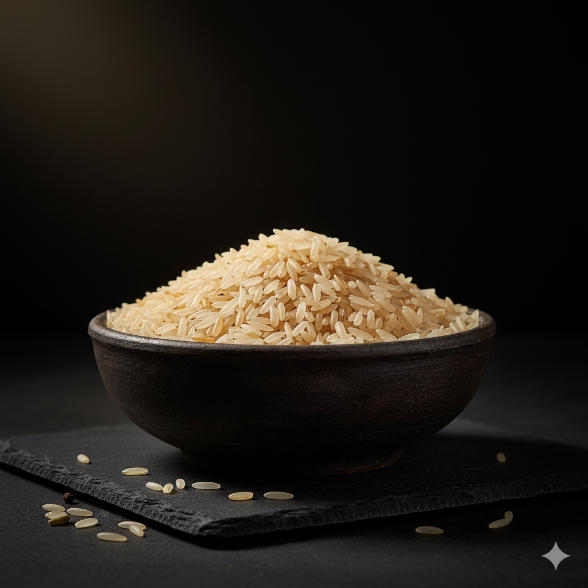
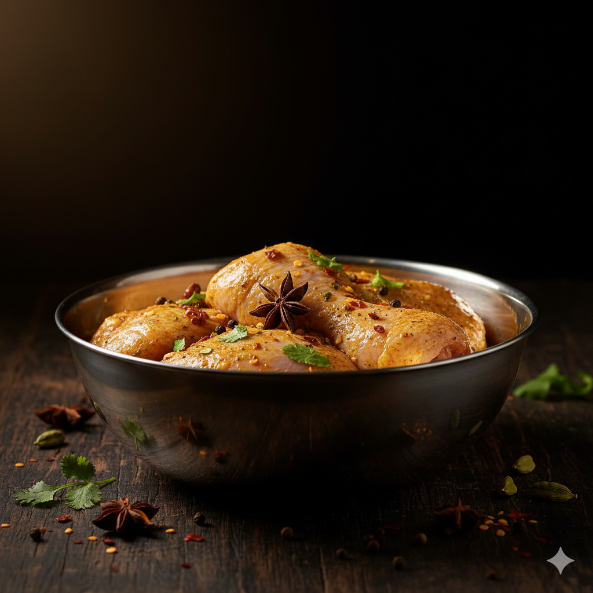
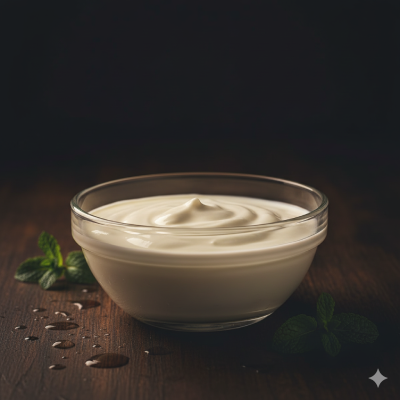
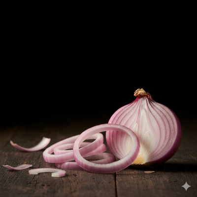
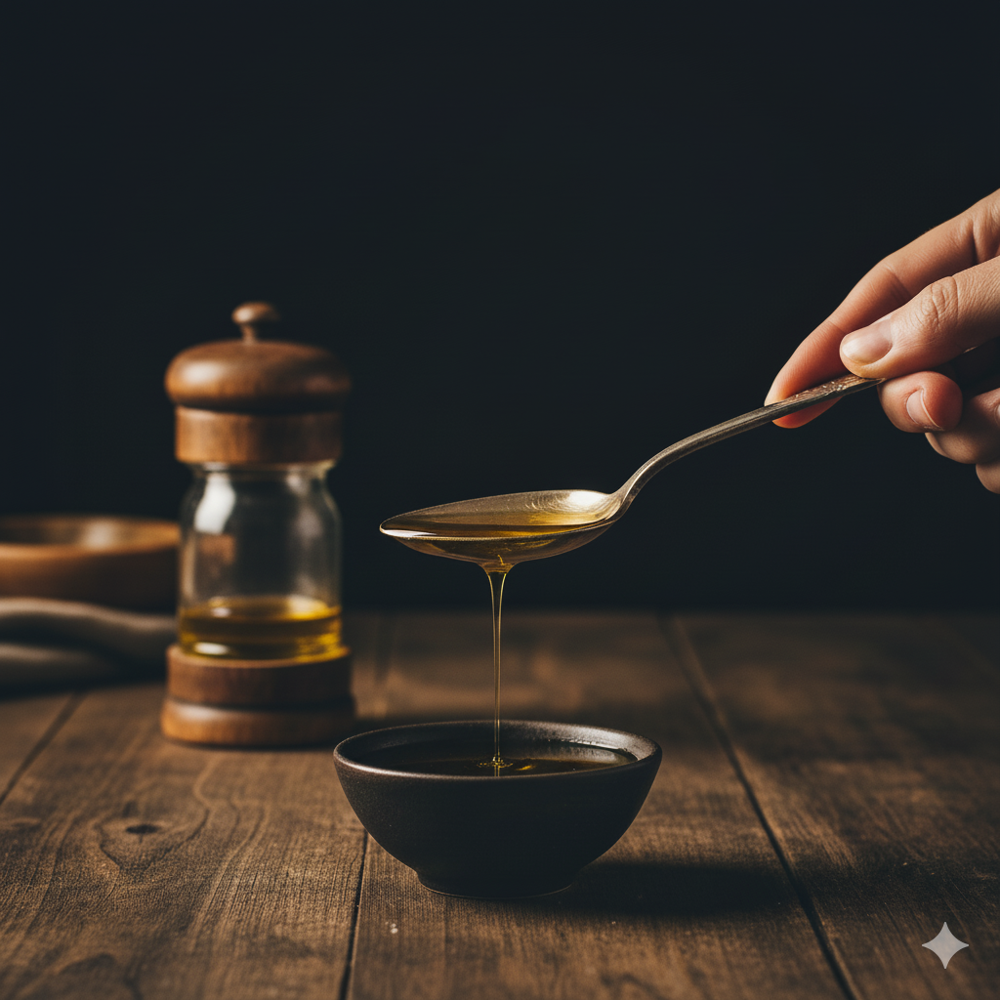

A royal South Asian rice dish with aromatic spices and juicy chicken, beautifully layered and slow-cooked to perfection.
| Ingredient | Image | Notes |
|---|---|---|
| Basmati Rice |  | 2 cups soaked for 30 mins |
| Chicken |  | 1 kg, cut into pieces |
| Yogurt |  | 1 cup |
| Spices Mix | |
garam masala |
| Onions |  | 2 large, thinly sliced |
| Turmeric powder | |
Turmeric |
| Garlic & Ginger Paste | |
2 tbsp |
| Red chilli powder | |
garam masala |
| Salt | |
2 teaspoons (adjust according to taste) |
| Oil |  | ½ (half) cup oil (or use 3 tbsp ghee for richer taste) |
| Mint & Coriander | |
For layering & garnish |

Mix chicken with yogurt, garlic, ginger, and spices. Rest for 30 minutes.

Cook rice 70% done with cardamoms and salt, then drain.

Fry onions, add marinated chicken, cook till soft.
Alternate layers of rice, chicken, fried onions, and herbs.
Seal pot and cook on low flame 30 minutes for rich aroma.
Serve hot with minty raita and salad 🥗